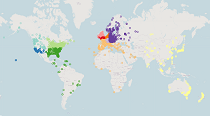

MLAT sync stats for
______
Also check out:
Interactive MLAT sync map

For some more info, check the main
How To Feed
page
Region
Count
Description
Region Status
Total Active Regions:
0
Total MLAT feeders:
0
Last Data Refresh:
Never
Current time (at page load):
Never